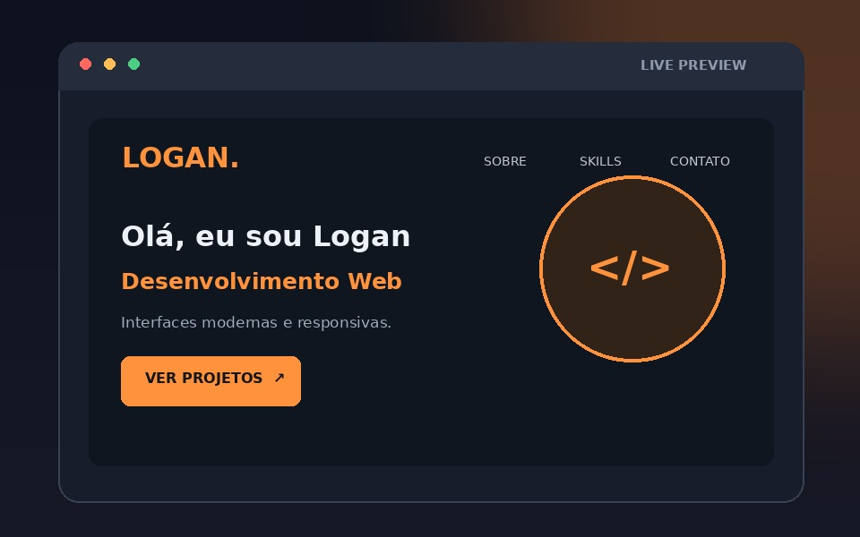
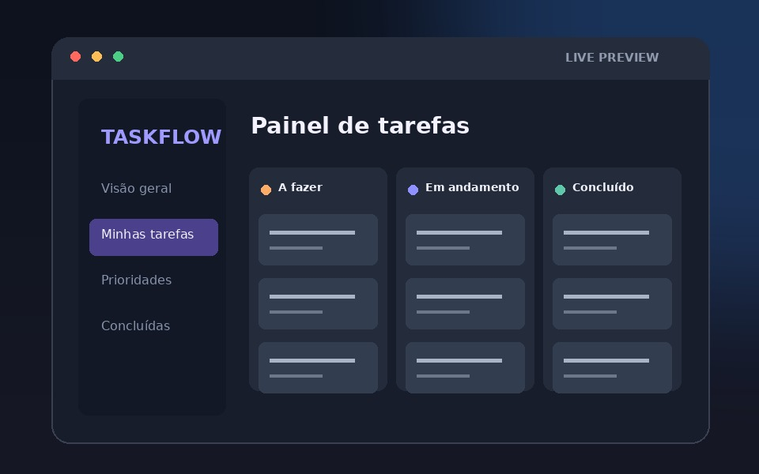
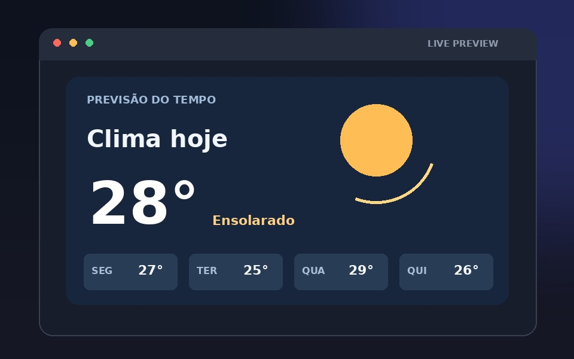
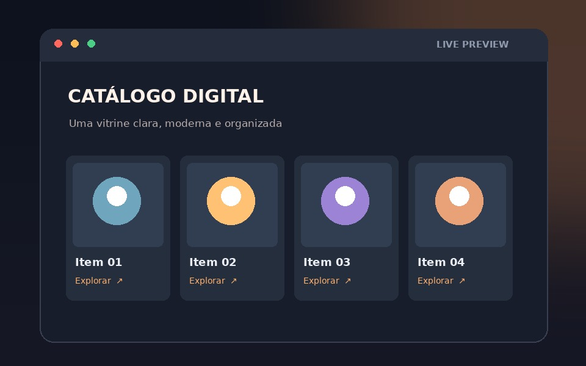

HTML5
Estrutura semântica, formulários e acessibilidade.
PORTFÓLIO PESSOAL
Estudante e entusiasta na área tecnológica, com interesse em aprender, criar, desenvolver, e solucionar problemas e conectar pessoas a soluções inteligentes.
01 / SOBRE MIM
Sou Logan, tenho 20 anos, sou estudante de Análise e Desenvolvimento de Sistemas no Senac Minas e, no Grupo Valor sou profissional SDR especializado em crédito estruturado e Consultor de negócios & Soluções financeiras.
Neste portfólio, reúno a minha evolução acadêmica e grandes projetos que refletem a minha paixão em tecnologia e em criar soluções que agregam valor.
E Conhecimentos que vão desde fundamentos da bolha tecnológica até inteligência em negócios
Conheça minha trajetória02 / O QUE ESTOU APRENDENDO
Estrutura semântica, formulários e acessibilidade.
Estilização, animações e identidade visual.
Composição de layouts em linhas e colunas.
Alinhamento e distribuição de componentes.
Conceitos de interatividade e lógica de programação.
Versionamento, repositórios e publicação de código.
03 / PORTFÓLIO

HTML · CSS · RESPONSIVIDADE
Site de apresentação profissional com seções, menu âncora, Grid e Flexbox.
Ver repositório
PROPOSTA ACADÊMICA
Conceito de aplicação para organizar atividades por prioridade e acompanhar pendências.
Solicitar informações
PROPOSTA ACADÊMICA
Estudo de cards de previsão do tempo, hierarquia visual e adaptação para telas menores.
Solicitar informações ↗
PROPOSTA ACADÊMICA
Layout de vitrine com cards, filtros visuais e organização de produtos usando CSS Grid.
Solicitar informações04 / JORNADA
Abrangência completa em hardware, redes locais, bancos de dados, algoritmos e desenvolvimento de aplicações para desktop e web.
Senac minas | 2023 - 2025
Graduação voltada para programação, desenvolvimento interfaces web, organização de projetos, redes, IA e inovação
Senac minas | 2026 - Em processo
Foco na gestão de políticas de saúde e segurança, avaliação e controlo de riscos ocupacionais, investigação de acidentes, primeiros socorros, planos de emergência e ações educativas no ambiente laboral.
Senac minas | 2022 - 2023
Domínio de análise de dados, otimização de fluxos e estruturação de informações para suporte à decisão
Senac minas | 2025
Eu juntamente de minha turma TI, desenvolvemos um jogo em python, inspirado em Pokemon, mas que se passa no próprio SenacMinas.
Senac minas | 2024 - 2025
Aprofundamento contínuo em Python, automação de processos, controlo de versão com Git e estruturação de ambientes de desenvolvimento eficientes no VS Code.
Conhecimentos
Elaboração e estruturação de planilhas eletrônicas e relatórios gráficos básicos para otimização de fluxos analíticos.
Conhecimentos
Consultoria negócios focada em consórcios, estruturação de crédito, estratégias de expansão de parcerias e soluções corporativas no setor financeiro.
Atual
05 / CONTATO
Investir em conhecimento é investir em você mesmo!